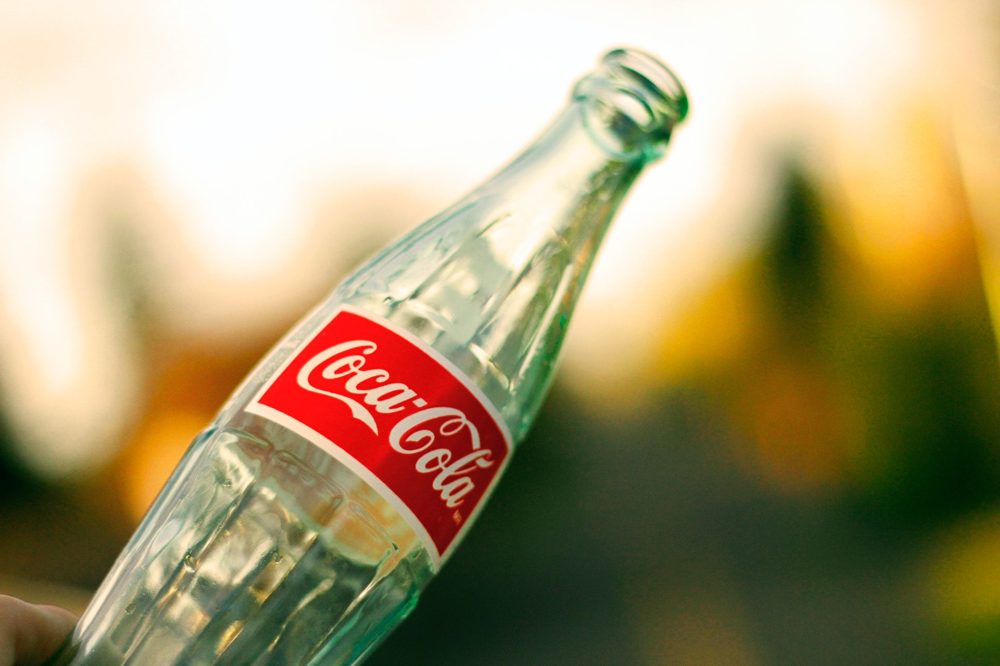

Soda Springs, Idaho

Currently:
Humidity:
Wind Speed:
Wind Chill:
Five Day


Article Title

The town of Soda Springs has a peculiar history. It all started when Pioneers who were moving Westward very upset at their travelling companions. these Pioneers
were very upset because drink lots and lots of Coca-Cola. And that meant that they werebelching and burping all day long. so, lots of there other computer it's
in there companies moving West were very upset cuz they just made gross noises all day long. one quote from a journal says " those darn cola boys all they do is
drink drink drink drink that darn Coke." as you can see they were very upset at the people who drank their Coca-Cola. eventually they got into a really really
big bad argument. one Pioneer grabed bottle of Coke from open it up and put it all over the ground. this made the Coca Cola drinkers very upset. so they packed
up their things and made their own way. they were tired of listening to those people who didn't like drinking soda.
eventually after some time traveling alone they ran out of their self cable for them. All they had a drink with water and they thought water is boring. So they
kept moving onward and upward moving towards the north of the western territories. later on, there's Journal account that tells a story of how they met the
bear I was very angry because winter and he couldn't sleep at all during his hibernation period. so, you started to attack the pioneers. luckily, there were
able to run away from them they're in their carts and with their horses
but eventually, they made it. To Soda Springs. Soda Springs was like paradise Settler's. Springs that literally rained down Coca-Cola from the mountains.
not only did it bring down Coke but I also brought down sodas such as dr. pepper even had strange sodas that people have never heard of like surge. all the
Pioneers figured that this would be the best place that they could ever settle so they unpacked their things and started to build a life here. That's how our ancestors
settled Soda Springs. unfortunately the Springs dried up of soda and now only rain down club soda water . Yuck!
to this very day the impact of the soda they found at those Springs has had a great and profound influence on this town. from vending machines on every corner
and soda fountains in every home. Some questioned of having this much soda available all the time is healthy for a population listen to those people that's such a
silly question. we sure love our corporate sponsorship froms Coca-Cola and all of its other related drink products!
So remember, remember to keep enjoying your citizenship here in Soda Springs and don't forget to buy Coke products so just Coca-Cola, Sprite, or Fanta!